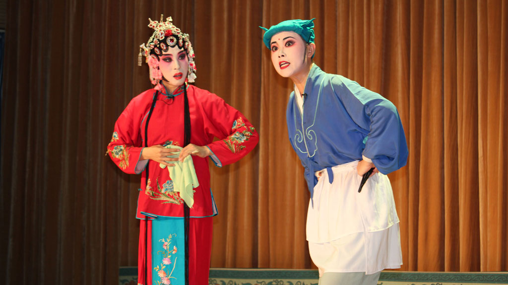

淄博介绍
五音戏简介

一、历史起源
淄博五音戏起源于明末清初，主要流传于山东淄博及周边地区。它由民间说唱艺术“肘鼓子”（又称“周姑子”）演变而来，融合了当地民歌、秧歌等元素，逐渐发展为成熟的戏曲形式。
名称由来:“五音”指其音乐以中国传统五声音阶（宫、商、角、徵、羽）为基础，但实际演出中乐队也使用七声音阶。另一说法是因早期表演者边击鼓边唱，鼓点节奏为“五音”而得名。
二、艺术特色
唱腔质朴婉转，以板腔体为主，常用【悠板】【二不应】【鸡刨爪】等曲调。
使用方言演唱（鲁中方言），语言幽默生动，贴近百姓生活。
伴奏乐器简单，早期仅用鼓、锣、梆子，后加入二胡、扬琴等。
表演形式:行当分为旦、生、丑，以“三小戏”（小旦、小生、小丑）为主，表演生活化。
剧目多反映民间故事、家庭伦理，风格诙谐细腻，如《王小二赶脚》《拐磨子》等。
三、代表剧目
传统剧目：《王二姐思夫》《松林会》《亲家顶嘴》《赵美蓉观灯》等。
新编剧目：《腊八姐》《珊瑚》《云翠仙》等，融入现代舞台艺术元素。
四、传承与保护
非遗地位:
2006年，五音戏被列入首批国家级非物质文化遗产名录。
代表人物:
邓洪山（艺名“鲜樱桃”）：20世纪著名五音戏表演艺术家，被誉为“五音泰斗”。
霍俊萍：当代传承人，两度获中国戏剧“梅花奖”，推动剧种创新。
保护措施:
淄博市五音戏剧院定期开展巡演、校园推广。
利用数字化技术保存传统剧目，结合新媒体扩大传播。
。
五、文化价值
五音戏是鲁中地区民俗文化的活态载体，其剧本、唱腔、方言为研究当地社会风貌提供了珍贵资料。
剧目内容倡导孝道、诚信等传统美德，具有社会教化功能。
六、现状与挑战
机遇：政府扶持力度加大，年轻观众通过短视频等平台接触五音戏。
挑战：受众老龄化、市场化竞争激烈，需在保留传统的同时探索创新表现形式。
小知识：五音戏早期因演员人数少，被称为“五人戏”，一台戏仅需五人分饰多角，道具简单，适合乡村演出。这种灵活性使其在民间广受欢迎。
如需进一步了解，可关注淄博市五音戏剧院的官方动态或观赏经典剧目视频，感受其独特魅力！
(图片来自yipinbowu.com)